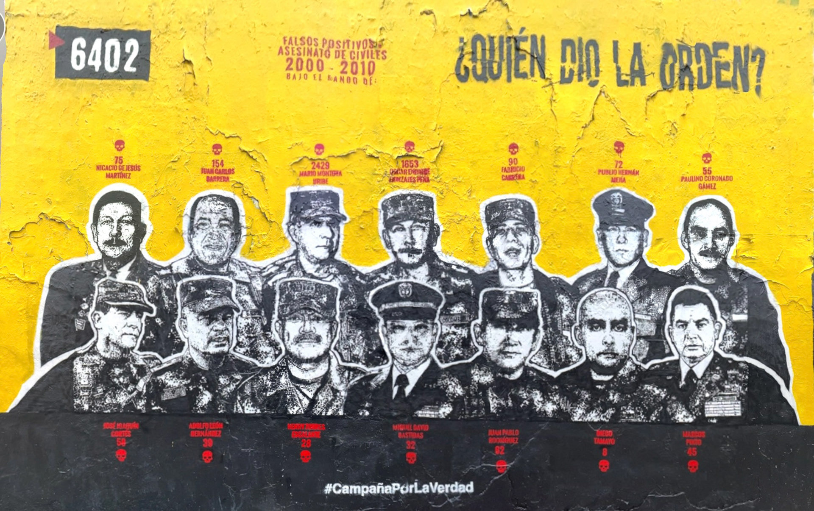
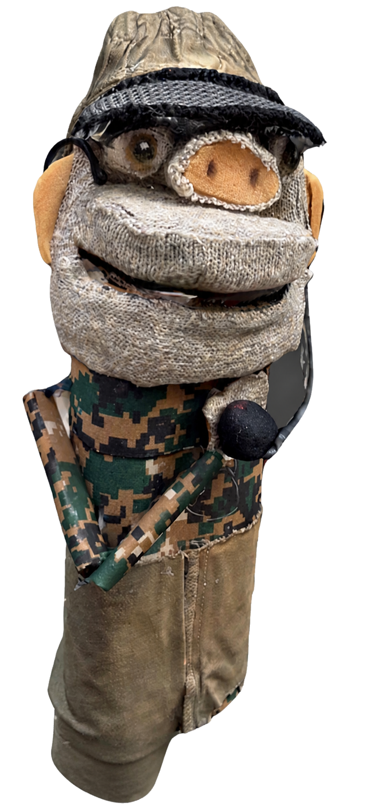

"Quien dio la Orden? Digital Homage" – a cutting-edge fusion of AI, AR, and participatory performance, exploring Colombia's "Falsos positivos" tragedy and empowering global activism through a mobile application.

To play embedded video, open this site through a local web server.
AR Experience
Recreate the iconic mural, "Who Gave the Order?" AR, with its immersive nature, digitally materializes this poignant symbol of resistance within the user's physical environment. The mural's interpretation is further enriched by commentary from two virtual puppets journalists, adding depth to its significance within Colombian society.
Coming from the beaches of Pianguita, Inocencio is the reporter who will be in the streets talking to ordinary people, looking for statements of all kinds, evidencing problems and making public denunciations, Inocencio has the mission to be the reporter who is on the side of the people, although sometimes his naivety plays tricks on him misinterpreting situations that generate controversy in his reports.

CERDOLFO DEMOCRACIO
Democracio is a detective reporter and faithful defender of law and order who left aside the armed forces to devote himself to journalism, however, his personality evidences his strong military training that makes him assume each report as a mission. His function lies in denouncing through his reports any violation of the rules and good conduct, he will be in the streets looking for statements questioning the behaviors and behaviors of citizens, and his strong temperament makes his reports an experience of police action.